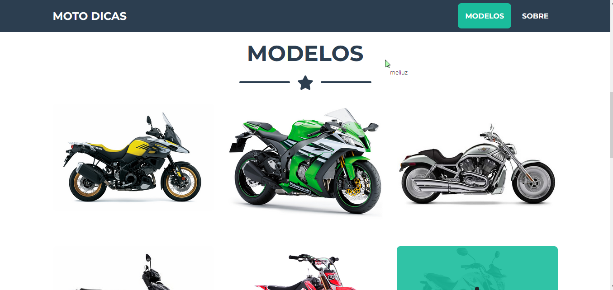

Raul Alves Floss
Cada dia aprendendo mais e mais!

Sobre Mim
Meu nome é Raul Alves, tenho 20 anos e estou no 4º semestre de análise e desenvolvimento de sistemas. Meu interesse por máquinas, smartphones, computadores e tudo ligado a tecnologia veio desde cedo sempre gostei de tudo relacionado a esse segmento. Além do meu interesse pela tecnologia em geral, Também sou apaixonado por esportes de todo tipo. Atualmente estou estudando o desenvolvimento de front-end
Meus Projetos

DICAS DE MOTOS
Um site que te ajuda a escolher a melhor opção pra você que procura uma moto, Esse projeto foi desenvolvido a base de HTML e CSS
EM BREVE
Em breve mais projetos
EM BREVE
Em breve mais Projetos